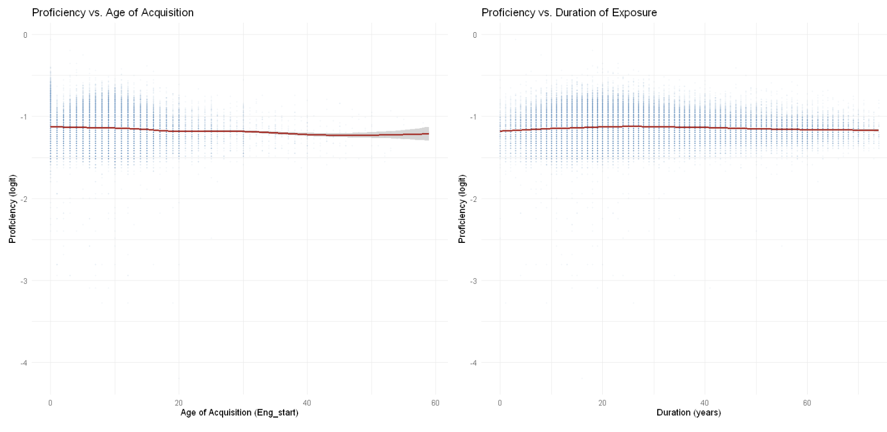

English Proficiency & Language Acquisition: A Statistical Analysis
May 2024

Investigated predictors of English proficiency in second language learners using data from Hartshorne, Tenenbaum & Pinker (2018), a large-scale study of over 600,000 second language learners who completed an online grammar test. Analyzed the effects of age of acquisition, multilingual status, and self-reported psychiatric diagnosis on proficiency outcomes across 130,000+ cleaned observations. Used exploratory data analysis, Welch t-tests, one-way ANOVA with Tukey post-hoc comparisons, bootstrapped confidence intervals, and Generalized Additive Models (GAMs) with thin-plate splines to capture non-linear acquisition-age effects, validated with 10-fold cross-validation.
View code